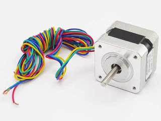
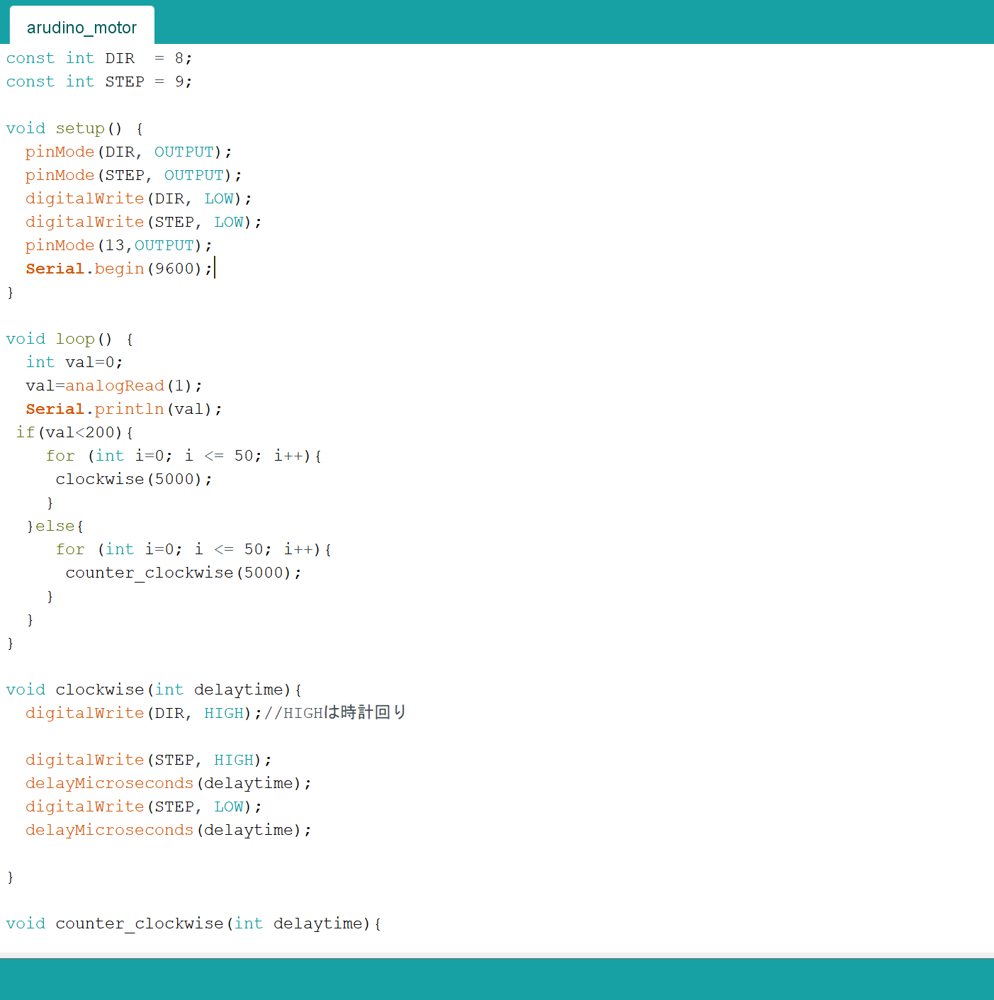
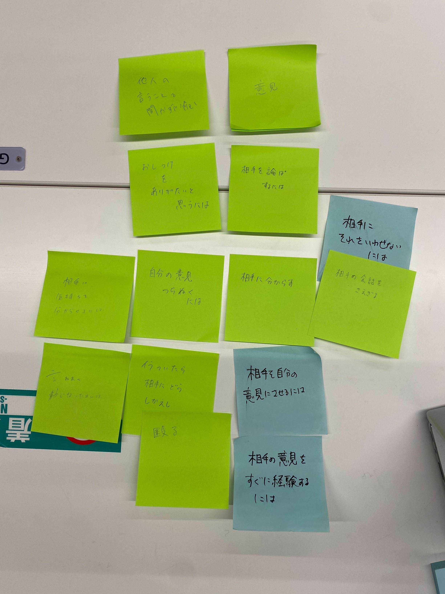
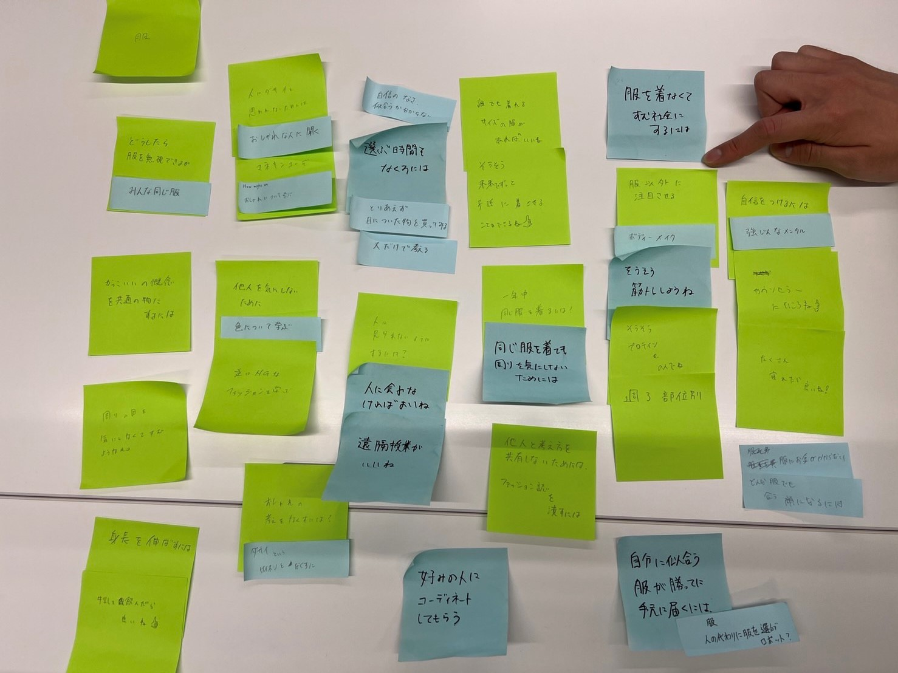
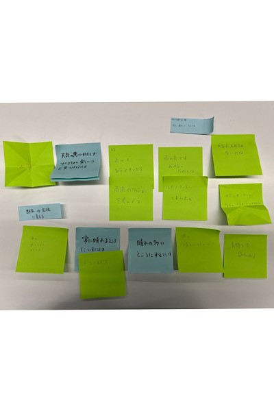

動きを操る・HMW.yesand

1:ステッピングモーターとは
時計の秒針のように、一定の角度ずつ回転するモーター。
モーターの基本設定は
こちらを参照
2:明るさセンサーで動きを制御する方法

if構文でvalの範囲を指定すると、明るさセンサーでモーターの動きを制御することができる。
3:グループワーク
How might "we" 私たちに何ができるのか。
課題を自由な発想で解決する。



yesandは話題の方向性がよくわからない方向に進みがち。話題に関連性を瞬時に判断することを意識する。
HMVでは様々な視点からの考えが必要だが、異なる視点・新しい視点とはどのような性質があるのかがよく分かっていない。
今回の授業の中で、「天気」のHMVを考えている中、「常に晴れているところにいるには」という意見を出したところ、
それいいねとチームメイトが反応してくれたのを見て、新しい視点から踏み込めた感触を得た。
変数自体を変えてしまうような考えだったが、新しい視点には「ありえないこと」から考えることも1つの重要な要素かもしれない。